O1: Deeves Hall Cottage, Deeves Hall Lane nr. Ridge
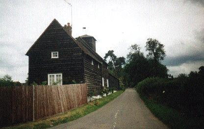
THE
AVENGERS: Silent Dust
(Roy Baker: June 1965)
The car carrying Steed and the Minister to Manderley passes the farm.
(Spotted by Michael Richardson, 1989)
THE
BARON: The Persuaders
(Leslie Norman: October 1965)
Roddy's Land Rover drives into a farm followed by The Baron's Jensen.
THE
BARON: Something for a
Rainy Day (Cyril Frankel: November 1965)
Seldon's daughter arrives at the French farm, watched by Max Holder
(Patrick Allen) and his accomplice (Derek
Newark) in their Jaguar. John
Mannering (Steve Forrest) reaches the farm in his
Citroen and awakens
there next morning to be met by Charlotte Russell (Lois
Maxwell) and
Cordelia (Sue Lloyd).
(Spotted by Michael Richardson, 1989)
THE
AVENGERS: A Touch of
Brimstone (James Hill: December 1965)
Steed's car with Mrs
Peel and Steed hurries past the farm towards the conference.
THE
SAINT: The Fiction
Makers (Roy Baker: May 1966)
Warlock, aboard a police car, pursues Simon and Kline after they escape
from the S.W.O.R.D. headquarters.
THE
AVENGERS: Escape in
Time (John Krish: September 1966)
Hearse drives past taking escapees to Thyssen's. Steed (Patrick
Macnee)
and Clapham (Geoffrey Bayldon) stop to get bearings
at the Yule Tide
Turkey Farm as Vesta (Judy Parfitt) drives past.
THE
BARON: Countdown
(Robert Asher: October 1966)
John Mannering's Jensen drives past the farm.
(Spotted by Michael Richardson, 1989)
THE
AVENGERS: From Venus
With Love (Robert Day: October 1966)
Mrs Peel (Diana Rigg) pulls up in her Lotus,
suddenly finding herself
under attack from the light source she is pursuing.
THE
AVENGERS: The
See-Through Man (Robert Asher: November 1966)
After loosing Mrs Peel (Diana Rigg), Elene (Moira
Lister) arrives for
her rendezvous with Ackroyd (Jonathan Elsom). She
is about to shoot
Ackroyde when Mrs Peel (Diana Rigg) pulls up in her
Lotus. Ackroyd
leaves as does Elene, but not before she summons Vazin. Later Vazin’s
Jaguar pursues Mrs Peel's Lotus Elan past the farm.
(Spotted by Michael Richardson, 1989)
THE
AVENGERS: Dead Man's
Treasure (Sidney Hayers: June 1967)
Carl (Neil McCarthy) and Alex (Edwin
Richfield) realise they have lost
Danvers. Carl and Alex head out on the hunt.
(Spotted by Michael Richardson, 1989)
THE
SAINT: Where the Money
Is (Roger Moore: Summer 1968)
Simon Templar is driven blindfolded by the kidnappers to the farm where
they are holding Jenny Kersh prisoner. Later Simon is able to locate
the farm and breaks in at night to rescue the girl.
THE
PROTECTORS: Triple
Cross (John Hough: 1972)
Charlie's girlfriend (Angharad Rees) drives a
blindfold Harry (Robert
Vaughn) to meet Charlie (John Neville)
who has kidnapped his friends.
Paul Buchet is held prisoner at the farm with a time bomb for company,
the Contessa (Nyree Dawn Porter) and Harry find him
just in time to
save him.
Television:
SHILLINGBURY TALES: The Shillingbury Miracle (1979)
O2: Ridge Village
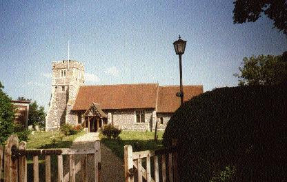
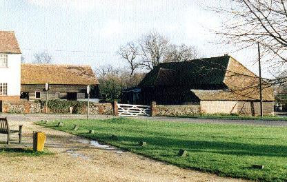
THE
AVENGERS: Dead Man's
Treasure (Sidney Hayers: June 1967)
Carl (Neil McCarthy) and Alex (Edwin
Richfield) arrive at the old forge
in the village of Galding. Steed (Patrick Macnee)
and Penny (Valerie
Van Ost) arrive soon after. Penny investigates the Jaguar.
Carl and
Alex leave the forge, closely followed by Steed and Penny. Steed is
forced to bring his Bentley to a sudden halt (on Crossoaks
Lane just
after the junction with Summerswood Lane) when his windscreen
is
shattered by a bullet. Bates (Ivor Dean) has
observed the incident from
a nearby field.
THE
SAINT: Where the Money
Is (Roger Moore: Summer 1968)
Kidnapper, German (Derek Newark) takes Jean Latour (Sandor
Elès) and
Judee Morten (Judee Morton) to pick up the ransom
money from a barn
(Ridge Farm, Crossoaks Lane/Deeves Hall Lane).
(Identified by Geoff Dodd, 4th May 2013)
THE
AVENGERS: Thingumajig
(Leslie Norman: January 1969)
The establishing shots of St. Mary's Church where the excavation takes
place were shot here.
THE
PROTECTORS: The
Bodyguards (Don Chaffey: 1972)
Alan Mason (Manning Redwood) arrives at the church
to collect a hidden
legacy. Harry (Robert Vaughn) and Paul (Tony
Anholt) arrive just in
time to save the Contessa.
THE
PROTECTORS: Sugar and
Spice (Charles Crichton: 1973)
A duplicate Bentley driven by the Contessa continues along Summerswood
Lane when Harry's Bentley turns into Crossoaks Lane to lose the
following Volkswagen.
THE
PROTECTORS: The Insider
(Don Leaver: 1973)
The Contessa (Nyree Dawn Porter) trails a suspect
blackmailer to the
church only to find it is the vicar.
RETURN
OF THE SAINT: Yesterday's
Hero (Roy Ward Baker: 1978)
Simon Templer (Ian Ogilvy), Diskett (Tony
Vogel), Sandy (Annette Andre)
and Mike Gates (Matthew Ryan) attend Roy Gate's
funeral.
RETURN
OF THE SAINT: The
Diplomat's Daughter (Charles Crichton: 1978)
Simon follows Marie de la Garde, who has stolen his Jaguar, from Dover.
(Identified by Geoff Dodd, January 2008)
INSPECTOR
MORSE: The Sins of the
Fathers (Peter Hammond: 1989)
Morse (John Thaw) talks to Lewis (Kevin
Whately) as he drives in his
Jaguar along Crossoaks Lane when an idea strikes him and he suddenly
pulls the car off the road.
Films:
THE OLD CURIOSITY SHOP
(1934)
THE CURSE OF THE CRIMSON ALTAR
(1968)
FATHER DEAR FATHER
(1972)
MUTINY ON THE BUSES
(1972)
THE BEST PAIR OF LEGS IN THE
BUSINESS (1973)
O3: Holmshill Lane, nr. Well End
DANGER
MAN: The Ubiquitous
Mr. Lovegrove (Don Chaffey: September 1964)
John Drake is seen driving his car off the A1 at the turning for London
Airport, but is about to be severely delayed.
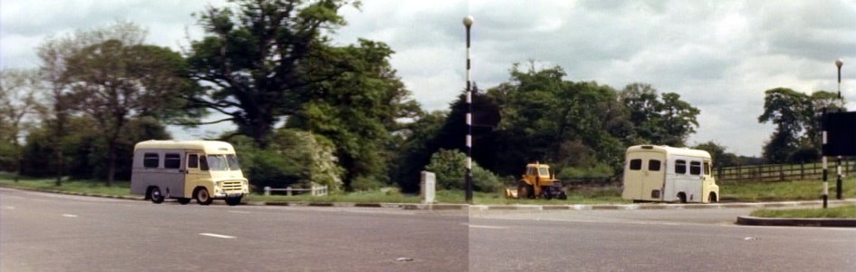
THE
BARON: The Edge of Fear
(Quentin Lawrence, May 1966)
The ambulance carrying Kent Jordan leaves the main road and turns onto
a country lane (from the A1 onto Holmshill Lane).
(Identified by Mike Richardson, May 2021)
THE
AVENGERS: Return of
the Cybernauts (Robert Day: June 1967)
Steed's Bentley pursues Mrs Peel's Lotus Elan along the country lane.
(Spotted by Michael Richardson, 1989)
THE
AVENGERS: Dead Man's
Treasure (Sidney Hayers: June 1967)
Steed's Bentley drives close by Carl (Neil McCarthy)
and Alex (Edwin
Richfield) as they work on their Jaguar.
THE SAINT: Legacy for the Saint (Roy Ward Baker: Spring 1968) The security van with Teal aboard, together with a police motorcycle escort, drive down the lane.
THE
AVENGERS: Super Secret
Cypher Snatch (James Hill: June 1968)
The Classy Glass Cleaning trucks travel towards Cypher Headquarters in
convoy (from the Bucketsland Lane end towards the A1),
picking up the
truck that blocked the phone lines on the way. The following day the
Classy Glass Cleaning trucks travel towards their meeting place outside
Cypher Headquarters in convoy.
O4: Dyrham Park Golf Club Gateway, Trotter's Bottom, nr. Dancer's Hill
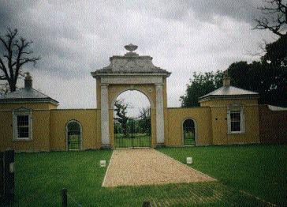
THE
AVENGERS: The
Thirteenth Hole (Roy Baker: September 1965)
Steed and Mrs Peel arrive in Steed's Bentley at Craigleigh Golf Club.
(Spotted by Michael Richardson, 1989)
THE
AVENGERS: The Girl
From Auntie (Roy Baker: October 1965)
Mrs Peel (Diana Rigg) leaves a charity ball to help
an old lady (Mary
Merrall) who overcomes her with a hypodermic.
THE
BARON: And Suddenly
You're Dead (Cyril Frankel: January 1966)
Franklin, in a stolen limousine, crashes through the gates of the
Sorensen Labs. Frederick, who is following Franklin on his motorcycle,
fails to get through the gates before they close and crashes into them.
The Baron and Cordelia drive past the gates in the Jensen, they park
and attempt to break in.
UFO:
Confetti Check A-O.K.
(David Lane: November 1969)
Straker's American saloon, with the newly married Ed and Mary aboard, drives along a country road (Trotter's Bottom seen from Dyrham Park Golf Club Gateway).
(Spotted by Geoff Dodd, August 2023)
O5: Kitt's End Road, Kitt's End
UFO:
Confetti Check A-O.K.
(David Lane: November 1969)
Straker's American saloon pulls up by the side of the road. Straker (Ed
Bishop) changes behind a bush whilst Mary Straker (Suzanne
Neve) waits.
(Spotted by Sam Denham, 1990)
O6: Rowley Lane, Well End
DEPARTMENT
S: A Cellar Full of
Silence (John Gilling: June 1968)
After losing contact with Jason Stewart races in the Bentley to the
telephone box.
(Identified by Vince Cox, April 2014)
RANDALL
AND HOPKIRK [DECEASED]: The
Smile Behind the Veil (Jeremy Summers: Autumn
1968)
After escaping Donald flags down a lift only to find Cynthia driving.
(Identified by Vince Cox, November 2012)
RANDALL
AND HOPKIRK [DECEASED]: Somebody
Just Walked Over My Grave (Cyril Frankel: Summer
1969)
Jeff Randall's Vauxhall pursues Harper and Dighton's hearse towards the
A1 junction.
O7: Dyrham Park Golf Club,
Galley Lane, nr. Dancer's Hill
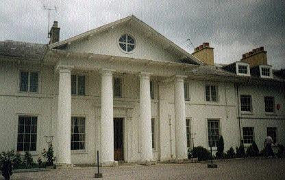
THE
SAINT: The Invisible
Millionaire (Jeremy Summers: Autumn 1962)
Simon Templar's Volvo arrives at Marvin Chase's country home.
THE
SAINT: The Noble
Sportsman (Peter Yates: 1963)
Lord Yearly arrives home in his Aston Martin. The next morning the
postman delivers the mail. At the weekend the saint's Volvo is parked
outside with other cars and The Saint checks the grounds.
RANDALL
AND HOPKIRK [DECEASED]: The
Smile Behind the Veil (Jeremy Summers: Autumn
1968)
The fake Seaton and his aides arrive at the Seaton Stonehurst home.
Brooks leaves the house and shortly afterwards Jeff arrives lost.
Hooper and Grant drag the beaten up Jeff to the car and drive off with
Jeff's Vauxhall.
Television:
GHOST SQUAD: It Won’t be a Stylish Marriage
(1961)
Films:
THE STRANGE WORLD OF PLANET X
(1957)
THE SECRET OF MY SUCCESS
(1965)
O8: A1, Borehamwood
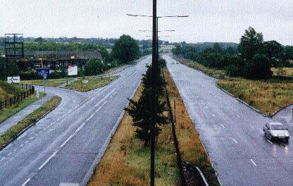
THE
SAINT: The Bunco
Artists (Peter Yates: 1962)
Mr and Mrs drive away after robbing Netherdon Church.
THE
SAINT: The Man Who
Liked Toys (John Gilling: June 1964)
Lewis drives George to his flat after visiting Costello and Hammel.
THE
SAINT: The Rhine Maiden
(James Hill: November 1964)
The Saint's Volvo turns onto the Offenbach road
THE
SAINT: The Abductors
(Jeremy Summers: March 1965)
Simon Templar and Madeline drive to Orley Airport.
THE
BARON: Title Sequence
(Summer 1965)
Mannering's Jensen thunders along the A1.
THE
BARON: Farewell to
Yesterday (Leslie Norman: September 1965)
The Baron's Citroen drives south along Italian motorway whilst trying
to catch up with a train (reversed film).
THE
BARON: The Long, Long
Day (Roy Baker: April 1966)
Navini's car is parked by an Italian motorway waiting for news of The
Baron (on Stirling Way by bridge) and then drives
off. The Baron's
Jensen drives along Italian motorway followed by a Red Citroen.
Navini's car overtakes the Citroen which pulls off the road at Moat
House Intersection, and continues to follow The Baron.
THE
SAINT: Escape Route
(Roger Moore: October 1966)
The Saint and John Wood are taken by V.W. van, at night, to an unknown
destination
THE
SAINT: Simon and
Delilah (Roy Baker: January 1967)
Film star Serena Harris and her co-star Tig Jordan are kidnapped and
are driven at high speed out of Rome.
THE
CHAMPIONS: The Body
Snatchers (Paul Dickson: Late 1967)
The A1 appears as back projection in the Mercedes as Squires tries to
escape.
THE
PRISONER: Fall Out
(Patrick McGoohan: December 1967)
A business man drives on the A20 alongside a tuneful low loader
carrying three rebels (Patrick McGoohan, Leo McKern, Alexis
Kanner).
DEPARTMENT
S: The Last Train to
Redbridge (John Gilling: 1968)
Jason's Bentley is stopped on the road by a police Jaguar and he is
told to call Sullivan.
DEPARTMENT
S: The Double Death of
Charlie Crippen (John Gilling: Summer 1968)
King and Sullivan discuss developments as they drive along the road
from Naples.
DEPARTMENT
S: A Ticket to
Nowhere (Cyril Frankel: December 1968)
Jason drives has Bentley with Lisa Crane aboard towards Westerly Grange.
THE
PROTECTORS: Triple
Cross (John Hough: 1972)
Harry Rule drives under the Rowley Lane bridge just before he has to
stop for petrol. The Contessa and Harry drive onto the A1 south-bound
from Rowley Lane in a radio detector van as they attempt to find Paul
Buchet's kidnappers.
THE
PROTECTORS: The
Numbers Game (Jeremy Summers: 1973)
The Contessa and Harry drive down the road from Dover and their car is
followed.
O9: Rowley Lane, nr. Arkley
THE
CHAMPIONS: Operation
Deep-Freeze (Paul Dickson: April 1967)
Whilst driving his Alfa Romeo in Switzerland Richard's sixth sense
starts to warn him of impending danger.
DEPARTMENT
S: The Double Death of
Charlie Crippen (John Gilling: Summer 1968)
Jason King's Bentley drives towards the Villa Fantelle, later followed
by Stuart Sullivan's Fiat.
O10: Hillcrest, Arkley (demolished)
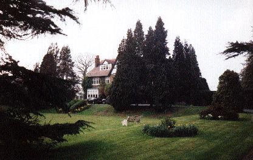
THE
AVENGERS: Something
Nasty in the Nursery (James Hill: March 1967)
Lord Webster arrives home but is observed by Gordon from his car. Mrs
Peel arrives soon after in her Lotus to question Webster.
THE
AVENGERS: The Positive
Negative Man (Robert Asher: July 1967)
Steed (Patrick Macnee) visits Dr. Cresswell (Ray
McAnally) who is
waiting for Peter Haworth (Michael Latimer), then
arrives just as Mrs.
Peel (Diana Rigg) drives up in her Lotus with news
from Risely Dale.
THE
AVENGERS: Game
(Robert Fuest: June 1968)
Steed arrives at Henry Averman's house in his yellow Rolls.
O11: Barnet General Hospital, Wellhouse Lane, Barnet
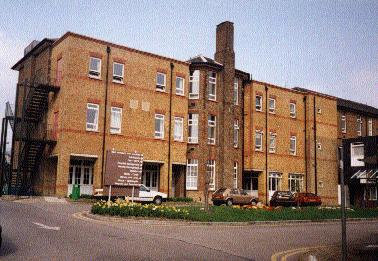
THE
SAINT: The Persistent
Patriots (Roy Baker: October 1966)
Liskard is confined to hospital after a murder attempt when Templar is
forced to throw an assassin from a fire escape to his death. Liskard is
then taken from the hospital by ambulance.
DEPARTMENT
S: The Perfect
Operation (Cyril Frankel: February 1969)
Stuart and Annabelle arrive at the City of Southwark Hospital to
investigate the mystery of the substitute brain surgeon. As Annabelle
leaves the hospital her car is followed.
DEPARTMENT
S: The Man From X
(Gil Taylor: Early 1969)
Stuart Sullivan finds himself in hospital after his crash.
THE
PROTECTORS: Implicado
(Jeremy Summers: 1973)
Mrs. Douglas calls the Contessa to the hospital, where she is confined,
to help clear her son's name.
O12: Summerswood Farm,
Summerswood Lane, Ridge
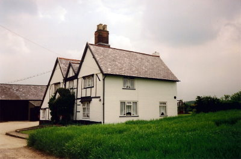
THE
PROTECTORS: Sugar and
Spice (Charles Crichton: 1973)
Paul (Tony Anholt) delivers Vicky (Debbie
Russ) to the farm where she
is to stay. The next day Manning (Derek Anders),
Colson (Phil Woods),
Kruger (Shane Shelton) and Barnes (Gerry
Crampton) attempt to kidnap
the girl. After the villains have been dealt with Harry takes Vicky and
the dog for a walk.
O13: Sawyers Lane/Bentley Heath Lane/Baker Street Crossroads, Bentley Heath, nr. Potters Bar (truncated by the M25)
THE
AVENGERS: Dead Man's
Treasure (Sidney Hayers: June 1967)
Emma and Mike arrive at the crossroads and Mike changes the sign for
'Swingingdale' before setting off again. Carl and Alex try the same
trick when they arrive and set off in the wrong direction so when Steed
and Penny arrive in their Bentley they are sent in the right direction.
O14: Wrotham Park, Hill
Road, Bentley Heath
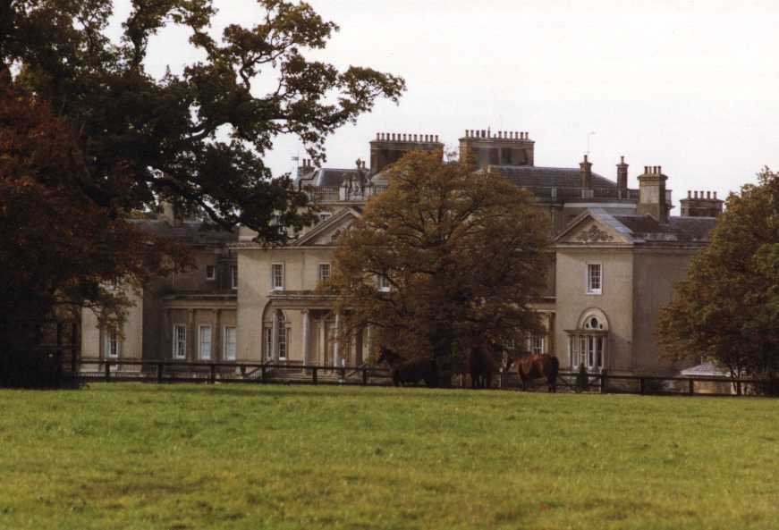
HAMMER HOUSE OF MYSTERY AND
SUSPENSE: The Late
Nancy Irving (Peter
Sasdy: Spring 1984)
Dr. Marquis (Tony Anholt) and Nurse Lee (Zienia
Merton) tend to their
patient, Ann (Monique de Sain), who dies of a heart
attack. Nancy
(Christina Raines) wakes up in the hospital after
her accident. Aragon
(Marius Goring) talks to Hoffman (Lewis
Fiander) in the grounds before
he leaves for his transfusion. After seeing her own funeral cortege
drive past she escapes past fellow patient, Tony Graham (Mick
Ford). A
policeman (David Rose) is eventually called by
Nancy to rescue her.
INSPECTOR
MORSE: Ghost in the
Machine (Chris Burt: 1988)
Professor Edward Ullman (Bernard Lloyd) arrives at
Hanbury House to see
Sir Julius Hanbury (Michael Godley). Georgina
Hanbury (Rainbow Dench),
Michelle Réage (Irina Brook), Lady Hanbury (Patricia
Hodge), Mrs.
Maltby (Patsy Byrne) and John McKendrick (Michael
Thomas) discover the
theft of some paintings. Inspector Morse (John Thaw)
and Lewis (Kevin
Whately) arrive at the house to investigate and eventually
they
discover Sir Julius' body in the mausoleum. Dr. Russell (Amanda
Hillwood) arrives to examine the body. As John drives Lady
Hanbury from
the house to collect her sons they pass Roger Meadows (John
Elmes)
speeding in the opposite direction.
LOVEJOY:
The Italian Venus (John
Woods: 1990)
Lovejoy (Ian McShane) and Alexander Felsham (Pavel
Douglas) drive to
meet Lady Jane (Phyllis Logan) at Careyholden House
where they
encounter Sir Hugo (Patrick Malahide) and Lady
Felicity (Celia Imrie).
Lovejoy discovers a missing masterpiece in the garden after which Sir
Hugo is confronted by Douglas Holden (Nicholas Farrell)
in a row about
money. Gervais Rackman (Ian McNiece) visits the
house and discovers the
sculpture on Lovejoy's instructions.
Film:
GOTHIC (1987)
PETER'S FRIENDS (1992)
PRINCESS CARABOO
(1994)
MAD DOGS AND ENGLISHMEN
(1995)
BRIDGET JONES'S DIARY
(2001)
GOSFORD PARK (2001)
Television:
HART TO HART: Harts and Hounds (1983)
JEEVES AND WOOSTER as
Chuffnell Hall (1991)
LADY CHATTERLEY (1993)
STICK WITH ME KID (1994)
THE BROKER'S MAN: Kith
and Kin (1998)
O15: Duke of York at Ganwick Corner
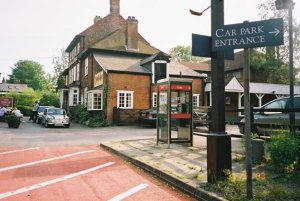
DEPARTMENT
S: The Shift That
Never Was (John Gilling: Autumn 1968)
Kate Mortimer and Douglas Stayte meet at a pub and drive towards the
Northover Atomic Power Station.
(Identified by Mandi Ebbrell, May 2003)
O16: Bignells Corner, South Mimms (re-developed as South Mimms Motorway Service area)
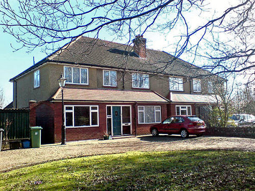
GIDEON’S
WAY: Boy with Gun
(Jeremy Summers: May 1965)
Chris Kirk (Howard Knight) and Vince Kelly (Michael
Craze) are on the
run from a farmer who has found them in his barn. The two boys run
across a field and jump into the back of a van parked by a roadside
café (St Albans Rd opposite the junction with Greyhound Lane).
THE
SAINT: The Contract
(Roger Moore: October 1964)
Simon Templar (Roger Moore) and Eileen Ballinger (Elizabeth
Weaver) go
to meet Dunstan (Dick Haymes) at a local pub (The
Middlesex Arms, which
has been demolished). After powdering her nose Eileen is
kidnapped by
Famberg (Robert Hutton) and his sidekick Ardossi (John
Bennett). They
are spotted by Simon and Dunstan, but Famberg is able to escape whilst
Adrossi is shot by Dunstan.
(Spotted by Geoff Dodd)
Film:
THE INTELLIGENCE MEN
(1965)
O17: Camlet Way and Hadley Common, Hadley Wood
THE
SAINT: The Chequered
Flag (Leslie Norman: February 1965)
As Simon drives with Catherine Marshall he tells her of his plan to buy
a second racing car (Camlet Way).
(Identified by Geoff Dodd, July 2008)
THE
SAINT: The Art
Collectors (Roy Baker: November 1966)
Marcel Legrand waits at his mansion (house on Hadley common)
for a
visit from Simon Templar and Natasha Wanova.
(Identified by Geoff Dodd, July 2008)
THE
SAINT: The Best Laid
Schemes (John Moxey: May 1967)
Simon Templar goes to visit Arlene Fleming at Millwell Sanatorium
(house on Hadley common).
(Identified by Geoff Dodd, July 2008)
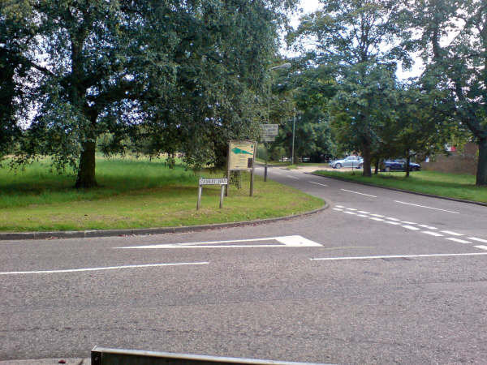
THE
CHAMPIONS: The
Fanatics (John Gilling 1967)
Following the sound of his motorcycle escort Sharron Macready and Craig
Sterling trail Richard Barratt around a corner.
(Identified by Geoff Dodd, August 2007)
Television:
Thriller: Ring Once for Death (Hadley Hurst on Hadley Common)
(1973)
O18: Hadley Green, Barnet
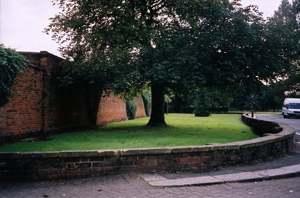
THE
SAINT: The Crime of
the Century (John Gilling: January 1965)
Bernhard Raxel’s mansion (The Grove, Hadley Green Road)
where a Raxel
has a police informant executed. Crantor and Gregory’s car carrying
Simon Templar, posing as Carl Munster, arrives at the home of Bernhard
Raxel. Teal’s man, Philip Grey, attempts to make radio contact with
Simon from his car parked by the gates of the house. The following
night Templar arranges to meet Grey in the grounds of the house, but he
is intercepted as he climbs the wall of the house.
THE
BARON: Farewell to
Yesterday (Leslie Norman: September 1965)
As he drives home from London Airport in his Mini Robert Rawson is
suddenly taken violently ill.
Identified by Wyn Roberts, April 2003
THE
AVENGERS: Who Was That
Man I Saw You With? (Don Chaffey: January 1969)
Tara King (Linda Thorson) sneaks past a guard and
breaks into the top
secret War Room (Hadley Cottage, Hadley Green Road).
Identified by Wyn Roberts, August 2002
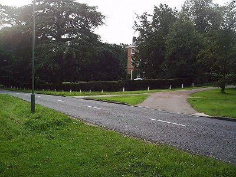
RETURN
OF THE SAINT: The
Obona Affair (Peter Sasdy:??)
Colonel Dyson (Jack Hedley) drops off the ransom
money and one of the
kidnappers, Michael Wright (Derek Newark), collects
it.
Identified by Wyn Roberts, August 2004
O19: Hadley Green Road, Hadley Common
THE
CHAMPIONS: The Fanatics
(John Gilling 1967)
Following the sound of his motorcycle escort Sharron Macready and Craig
Sterling trail Richard Barratt into some parkland.
(Identified by Geoff Dodd, August 2007)
O20: Junction Buckettsland Lane, Holmshill Lane and Summerswood Lane
THE
AVENGERS: Dead Man's
Treasure (Sidney Hayers: June 1967)
Carl (Neil McCarthy) and Alex (Edwin
Richfield) realise that someone is
cheating when they see a sign for Swingingdale which indicates they are
heading away from the village
(Spotted by Sam Denham, August 2007)
O21: Bakers Hill/Hadley Wood Road, Hadley Wood
THE
SAINT: The Chequered
Flag (Leslie Norman: February 1965)
On the way home from Beau's party, Simon and Catherine Marshall drive
to Oscar Newley's workshop in a Rolls Royce (Hadley Common
gateway to
The Crescent).
(Identified by Geoff Dodd, November 2011)
THE
BARON: The Maze
(Jeremy Summers: June 1966)
John Mannering (Steve Forrest) is driving along a
country road in his
Jensen when a young girl, Jill Prentice (Judith Arthy),
runs in front
of his car. She gets into the car and tells Mannering to drive off just
as two men, Marsh (Patrick Durkin) and Marvin (John
Orchard), appear
out of the woods with guns. They shoot at Mannering's Jensen and he
drives off the road through a fence as his windscreen shatters. Later
Mannering and Cordelia Winfield (Sue Lloyd) are
taken by the police,
D.I. Walsh (Glynn Edwards) and Det. Sgt. Miller (David
Morrell), back
to his car, but Mannering claims that this is not where his car left
the road. Later Mannering and Cordelia find the spot where the crash
took place with a recently repaired fence. Later Mannering and Cordelia
walk along golf course to find the path to Crestview House and later
still Mannering runs along this path to stop the assassins shooting the
General
THE
BARON: The Man Outside
(Roy Baker: September 1966)
Douglas McKrae (Donald Douglas) nearly crashes his
car when his tyre
blows out on a narrow Scottish road. As he is changing his tyre a car
pulls up carrying Bruno Orsini (David Bauer), Dino
Rossi (Paul
Maxwell), Vince Florio (Michael Coles)
and Philip Tremayne (Jeremy
Burnham). The occupants of the car try to get McKrae to move.
An
argument is about to start when McKrae recognises Bruno Orsini. This
leads to the men in the car attacking McKrae and arranging his death in
a fake motor accident.
(Thanks to Alan Field, Geoff Dodd and Keith Howard, October
2008)
THE
CHAMPIONS: The Fanatics
(John Gilling 1967)
Sharron Macready (Alexandra Bastedo) and Craig
Sterling (Stuart Damon)
follow Richard Barratt (William Gaunt) and his
escort. Croft (Gerald
Harper) has laid a explosive device in the road and detonates
it as the
vehicles approach. He guns down the escort and guards and frees
Richard. They both escape in a waiting helicopter before Sharron and
Craig can react. The helicopter lands where Anderson (Julian
Glover) is
waiting with a car.
(Suggested by Keith Howard, September 2006, confirmed by Geoff
Dodd)
THE
CHAMPIONS: Twleve
Hours (Robert Asher: Late 1967)
A Royal Navy van is ambushed and hi-jacked with the bomb on
board by a gang led by Martin Vedel (Alexis Chesnakov).
THE
CHAMPIONS: Reply Box
No. 666 (Cyril Frankel: 1968/67)
Craig Sterling (Stuart Damon) return to his car
after a walk with his
girlfriend in the country. As she gets into the car she notices that
her wrist watch is missing. Craig, using his extraordinary powers,
listens for the ticking of the watch and is able to find it.
DEPARTMENT
S: The Trojan Tanker
(Ray Austin: Summer 1968)
Just outside Paris - In the middle of the night a courting couple
Eccles (Michael Balfour) and his girlfriend (Penny
Bird) cause a tanker
wagon to crash. The tanker is found to have a hidden compartment. Later
two motorcyclists, pretending to be police officers flag a similar
tanker down and attack the driver. Some nights later two real
motorcycle officers flag down the truck which has been fitted with
another secret compartment.
(Identified by Alan Field, October 2008)
DEPARTMENT
S: The Shift That
Never Was (John Gilling: Autumn 1968)
Kate Mortimer and Douglas Stayte drive towards the Northover Atomic
Power Station (Bakers Hill at the junction with Hadley Road).
(Identified by Geoff Dodd, December 2006)
DEPARTMENT
S: The Man Who Got a
New Face (Cyril Frankel 1968)
Travelling along a country road at night Monique Grelle's car is
perused by Gerhard in his Citroen. He forces Monique Grelle off the
road towards a cliff. Later Emilio Andre drives his Rolls Royce from
his house to the appointed spot for the ransom payment. The same night
the Department S team race towards the Italian border in order to
intercept the blackmailers with Emilio Andre's money. Once they receive
a signal from the bug they block the coast road, but Gerhard and Nicole
do not stop and drive off the road at speed crashing their car.
THE
AVENGERS: Who Was That
Man I Saw You With? (Don Chaffey: January 1969)
Fairfax (William Marlowe) follows Tara King (Linda
Thorson) in her
Lotus Europa, to a remote telephone box. He watches with binoculars
from his car as Tara removes an envelope from beneath the telephone
directories and leaves. Later Steed in his Rolls Royce is lured to the
same spot.
DEPARTMENT
S: The Duplicated Man
(Paul Dickson: Spring 1969)
Stuart Sullivan arrives in his Vauxhall at the spot where Jason King
has landed with his parachute.
RANDALL
AND HOPKIRK [DECEASED]: Murder
Ain't What It Used To Be! (Jeremy Summers:
Summer 1969)
Paul Kirstner (Alan Gifford) recognises a figure in
the road as Bugsy
Spanio (David Healy) and drives his car straight at
him. Susan Kirstner
(Sue Gerrard) grabs the wheel and the car comes to a
halt off the road.
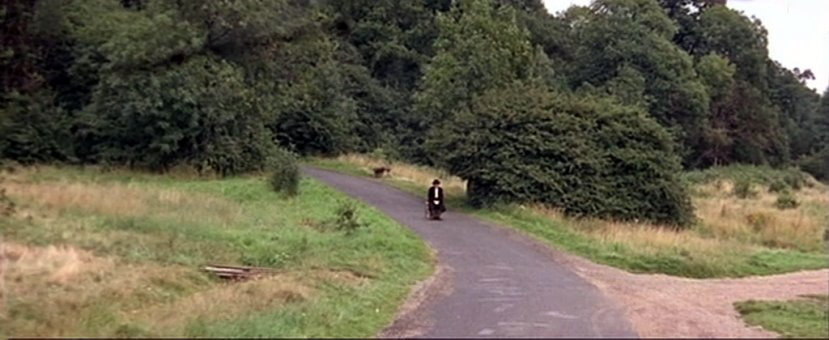
Film:
SUMMER HOLIDAY (1962)
O22:
Barnet Police
Station, Barnet Hill, Barnet (rebuilt)
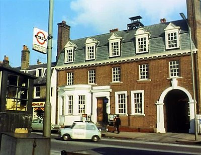
RANDALL
AND HOPKIRK [DECEASED]: Could
You Recognise the Man Again? (Jeremy Summers:
Spring 1969)
Jeff and Jeannie go to the local police station to give a statement to
Inspector Large about the murder witnessed by Jean.
Identified by Geoff Dodd and ‘Mark O’, on the Britmovie Forum, July 2009
O23: Hill Farm, Oakridge Lane, Radlett
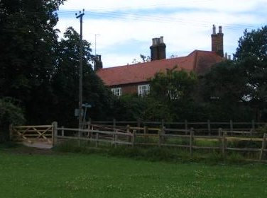
THE
AVENGERS: Thingumajig
(Leslie
Norman: January 1969)
The house where poor old Brett is lying in his trance.
(Identified by Martin Cooper, June 2008)
O24: Summerswood Lane
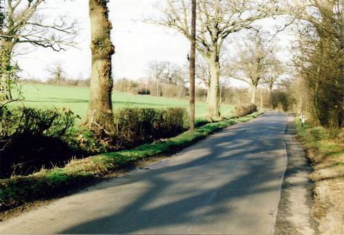
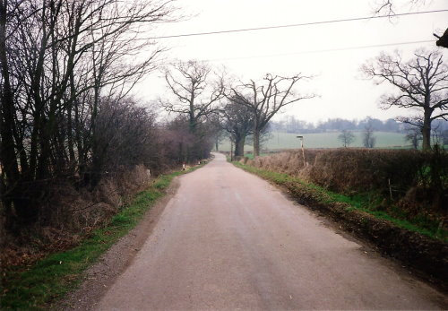
THE
SAINT: The Rough
Diamonds (Peter Yates: 1963)
Joe and Ned drive the stolen Continental Armoured Security car to
Gatwick Airport to intercept the diamond delivery.
THE
SAINT: Jeannine
(John Moxey: May 1964)
Madam Chen is robbed by Fouquet in the back of his car as they drive to
Paris. Simon Templar has been following in his Volvo and continues to
chase the villains after Madam Chen (Jacqui Chan)
and Jeannine Roger
(Sylvia Simms) are abandoned at the side of the road.
THE
SAINT: The Contract
(Roger Moore: October 1964)
Farnberg and is hot on the tail of Simon and Mrs Ballinger in the Volvo
as they leave Oxford.
THE
SAINT: The Smart
Detective (John Moxey: February 1965)
Simon Templar races towards the Northbank Yacht club in his Volvo.
THE
AVENGERS: Silent Dust
(Roy Baker: June 1965)
The Minister's Rolls with Steed aboard drives along Summerswood Lane on
the way to Manderley (back projection).
THE
AVENGERS: Dead Man's
Treasure (Sidney Hayers: June 1967)
As Steed and Penny drive down a hill they find Carl (Neil
McCarthy) and
Alex’s (Edwin Richfield) Jaguar has broken down.
They do not stop to
offer any assistance.
THE SAINT: Legacy for the Saint (Roy Ward Baker: Spring 1968) Tony and Charlie are observed leaving the club and are followed by police officers, in a van, posing as telephone engineers. Later the security van with Teal aboard, together with a police motorcycle escort, drive along the lane.
THE
SAINT: Where the Money
Is (Roger Moore: Summer 1968)
Simon (Roger Moore) is driven blindfold along a
road to his meeting
with Jenny. A photo taken by his wristwatch camera enables him to
retrace his steps later.
THE
PROTECTORS: King Con
(Jeremy Summers: 1972)
Alan Sutherland (Anton Rogers) follows The
Contessa’s Rolls on its way
to the races. Cribbs (Ronald Lacey) is waiting at a
junction and pulls
out causing the Rolls to crash. While the chauffer, Chino (Anthony
Chinn), tells Cribbs off, Alan Sutherland (Anton
Rogers) consoles The
Contessa.
(Identified by Geoff Dodd, September 2008)
THE
PROTECTORS: Sugar and
Spice (Charles Crichton: 1973)
As a party of schoolgirls makes walks along a country lane, Manning
(Derek Anders) points out the ‘target’, Vicky (Debbie
Russ), to Colson
(Phil Woods) whilst inside their car.
O25: Wood Street, Barnet
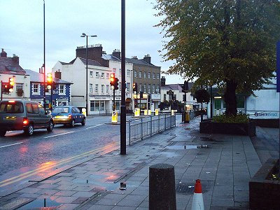
THE PROTECTORS:
Trial (Charles
Crichton: 1973)
Arthur Gordon (Joss Ackland) wanders the streets
aimlessly until he
sees a billboard stating that the “Standgate Trial” is about to reopen.
Identified by Wyn Roberts, October 2004
O26: Victoria Maternity Hospital, Wood Street, Barnet
THE SAINT: The Master Plan (Leslie
Norman:
1967)
Cord Thandel arrives at Welbeck Hospital intent on killing Tony Lane.
After the attempted murder Cord escapes down a fire escape to his
waiting car. Two hours later the Saint leaves after questioning Tony.
Identified by 'Mark O' of the Britmovie Forum, January 2011
O27: Strangeways Farm,
Rowley Lane
Identified with help from Jaz Wiseman, Geoff Dodd and Piers Johnson
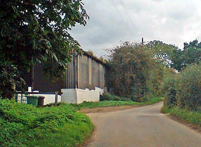
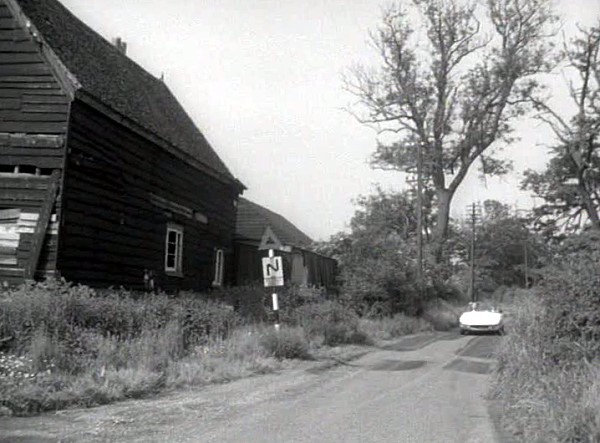
THE AVENGERS: Silent Dust (Roy
Baker: June
1965)
Steed (Patrick Macnee) is trying to investigate
Omrod's farm buildings
when he is warned off by Mellors (Conrad Phillips)
with a gun. Steed
walks away, but doubles back to renew his investigations. As he leaves
one of the buildings he is spotted by Melloers who fires at him and
chases him into a nearby spinney. Here Steed treads in a gin trap and
has to lay low. He eventually collapses. That night Mrs. Peel (Diana
Rigg) goes to the farm to search for steed.
(Identified with help from Jaz Wiseman, Geoff Dodd and Piers
Johnson)
THE AVENGERS: Man-Eater of Surrey Green
(Sidney Hayers: May 1965)
Following the lead of Peterson's cancelled order for oil drilling
equipment, Mrs. Peel (Diana Rigg) drives Steed (Patrick
Macnee) in her
Lotus to the derelict Moat Farm, Denbigh. After exploring the property
they find a space capsule and inside a dead astronaut. The military are
called in and Commander Dennis (David Hutcheson)
briefs Steed. Further
investigation reveals an alien seed pod and botanist, Dr. Sheldon
(Athene Seyler)is called in as a scientific advisor.
(Identified with help from Jaz Wiseman, Geoff Dodd and Piers
Johnson)
O28: Barnet Road/Wagon Road, Bentley Heath
MARK SABER aka
THE VISE aka
UNCOVERED:
Hear No Evil (Ernest
Morris: 1958)
Mark Saber drives Barney and Judy to see their new client, Miriam
Booth, who lives in a large house on the east coast.
(Confirmed by Geoff Dodd)
O29: Earl's Farm, Earls Road, Ridge

THE AVENGERS: From Venus With Love (Robert
Day: October 1966)
Mrs Peel sees a light source in a farm opposite and sets off
on foot to investigate (Earl's Farm seen from Deeves Hall
Lane).
THE AVENGERS: The Hidden Tiger (Sidney
Hayers: January 1967)
It is late at night and Mrs Peel looks across the fields to the
Chippenham manor Experimental Husbandry Farm and sees that the lights
are still on in the laboratory (Earl's Farm seen from Deeves
Hall Lane).